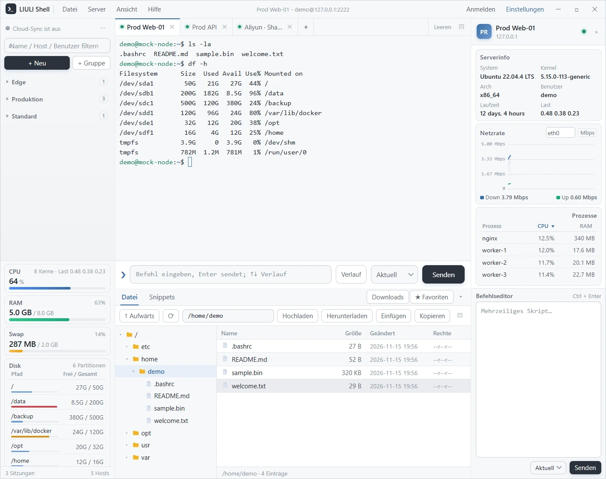

▤
Serververwaltung
Server in Gruppen organisieren, mehrere auswählen, per Drag & Drop verschieben oder Konfigurationen kopieren; gelöschte Verbindungen bleiben 30 Tage im Papierkorb und lassen sich jederzeit wiederherstellen.
LIULI Shell ist ein plattformübergreifender SSH-Client.
Es vereint Verbindungsverwaltung, interaktives Terminal, SFTP-Dateiübertragung, Laufzeitüberwachung und Konfigurationssynchronisierung in einer Desktop-Anwendung – für Entwickler und Administratoren, die mehrere Server verwalten.

Windows 10 / 11 bietet Installer und Portable; Linux und macOS werden aus dem Quellcode gebaut. Installer und Portable haben den gleichen Funktionsumfang.
Der Installer enthält einen Einrichtungsassistenten und legt Verknüpfungen an; die Portable-Version läuft nach dem Entpacken – ideal für USB-Sticks oder temporäre Umgebungen.
夸克网盘 öffnen ↗Für Netze außerhalb Chinas geeignet; Release-Assets werden mit den Repository-Commits synchron aktualisiert.
Zu den GitHub Releases ↗Für Netze innerhalb Chinas geeignet; portable Assets bleiben mit dem Repository synchron.
Zu den Gitee Releases ↗Abhängigkeiten auf dem Zielsystem installieren und paketieren; unterstützt deb, AppImage, tar.gz sowie dmg und zip für macOS.
%APPDATA%\LIULI Shell, Upgrades oder Neuinstallationen löschen sie nicht. Beim Computerwechsel können Sie die Cloud-Synchronisierung als Backup nutzen oder die Konfigurationsdatei in den Einstellungen exportieren und übertragen.
Linux- und macOS-Pakete müssen auf dem jeweiligen System gebaut werden. Führen Sie die Befehle einzeln aus, nicht den ganzen Block einfügen. Das Skript erkennt die Distribution, installiert Abhängigkeiten und fragt nach dem Pakettyp.
Zuerst eine Quelle wählen (Gitee oder GitHub), dann in das Verzeichnis wechseln und das Build-Skript ausführen.
Gitee klont standardmäßig nach liuli-shell, GitHub standardmäßig nach Liulishell; unten wird einheitlich nach liuli-shellgeklont, damit alle folgenden Befehle gleich bleiben.
Git wird benötigt.Schritt 0 installiert Git; Schritt 1 behält nur eine Quelle; Schritt 2 führt das Build-Skript aus. Build-Befehle erst nach abgeschlossenem Klonen ausführen.
# 0) Git wird benötigt; bereits installiert wird übersprungen (auf anderen Distributionen dnf / pacman) command -v git >/dev/null || sudo apt-get update && sudo apt-get install -y git # 1) Alte Verzeichnisse löschen, dann eine Quelle klonen (Gitee / GitHub) # Gitee (in China empfohlen, Standardverzeichnis ist liuli-shell) rm -rf liuli-shell Liulishell && git clone https://gitee.com/liuliwanjiaweb/liuli-shell.git liuli-shell # GitHub (außerhalb Chinas empfohlen; Standardverzeichnis ist Liulishell, hier explizit liuli-shell) rm -rf liuli-shell Liulishell && git clone https://github.com/LIULIWANJIA/Liulishell.git liuli-shell # 2) Ins Projekt wechseln und bauen: Distribution erkennen → Systemabhängigkeiten ergänzen → deb / AppImage wählen → paketieren → Installation anbieten cd liuli-shell && bash scripts/build-linux.sh
Die Artefakte liegen in dist/. Das Skript fragt nach der Auswahl 1 = deb / 2 = AppImage / 3 = beides; für nur .tar.gz nutzen Sie bash scripts/build-linux.sh tar. Das Skript behandelt automatisch den *t64 -Paketnamen-Fallback unter Ubuntu 24.04+. In nicht interaktiven Umgebungen wie CI wird nicht automatisch installiert; das Artefakt muss manuell installiert werden. Bei Problemen zuerst bash scripts/build-linux.sh check ausführen; bei langsamen Electron-Downloads wechselt das Skript automatisch den Mirror.
# 3) Wenn Abhängigkeiten fehlen oder der Build fehlschlägt, diese nacheinander versuchen
bash scripts/build-linux.sh repair
bash scripts/build-linux.sh deps
bash scripts/build-linux.sh
Bereits installierte Basisumgebung wird übersprungen.Homebrew fragt bei der Installation nach dem Passwort des aktuellen Benutzers. Nach dem Klonen Abhängigkeiten installieren und paketieren; Intel oder Apple Silicon nach Bedarf wählen.
# Basistools (bereits installiert wird übersprungen; xcode-select öffnet einen Dialog, auf das Ende warten) xcode-select --install 2>/dev/null || true command -v brew >/dev/null || /bin/bash -c "$(curl -fsSL https://raw.githubusercontent.com/Homebrew/install/HEAD/install.sh)" # Homebrew nach der Installation in den PATH aufnehmen (Intel: /usr/local/bin/brew) if [ -x /opt/homebrew/bin/brew ]; then eval "$(/opt/homebrew/bin/brew shellenv)"; elif [ -x /usr/local/bin/brew ]; then eval "$(/usr/local/bin/brew shellenv)"; fi # Node ≥ 18 erforderlich; bei Fehlen oder zu alter Version 20 installieren, dann prüfen node -v 2>/dev/null | grep -qE '^v(1[89]|[2-9][0-9])' || brew install node@20 brew link --overwrite --force node@20 >/dev/null 2>&1 || true node -v && npm -v # Alte Verzeichnisse löschen, dann eine Quelle klonen (Gitee / GitHub) rm -rf liuli-shell Liulishell # Gitee (in China empfohlen, Standardverzeichnis ist liuli-shell) git clone https://gitee.com/liuliwanjiaweb/liuli-shell.git liuli-shell # GitHub (außerhalb Chinas empfohlen; Standardverzeichnis ist Liulishell, hier explizit liuli-shell) git clone https://github.com/LIULIWANJIA/Liulishell.git liuli-shell
cd liuli-shell npm ci || npm install # bei Fehler automatischer Rückfall auf npm install npm run vendor # Bei langsamen Electron-Downloads in China die nächsten beiden Zeilen auskommentieren (optional) # export ELECTRON_MIRROR=https://registry.npmmirror.com/-/binary/electron/ # export ELECTRON_BUILDER_BINARIES_MIRROR=https://registry.npmmirror.com/-/binary/electron-builder-binaries/ npm run dist:mac # x64 + arm64 zusammen bauen npx electron-builder --mac dmg zip --arm64 # nur Apple Silicon
Die Artefakte liegen in dist/ (.dmg / .zip). npm run vendor kopiert xterm-Ressourcen nach src/renderer/vendor, muss vor dem Paketieren ausgeführt werden; Intel- und Apple-Silicon-Artefakte sind nicht austauschbar. Wenn Gatekeeper die unsignierte App blockiert, per Rechtsklick „Öffnen“ zulassen.
In China wird Gitee empfohlen; bei langsamen Electron-Downloads Mirror-Variablen setzen.
Importiert von FinalShell exportierte JSON-Dateien oder einen ganzen Konfigurationsordner. Der Import liest Verbindungsdaten, baut die Gruppenhierarchie nach und zeigt vor dem Schreiben eine Statistik.
Dateien einfach ablegen; mehrere JSON-Dateien oder der gesamte Konfigurationsordner sind möglich.
Ordner erzeugen Gruppen nach Hierarchie (maximal drei Ebenen); JSON-Dateien unterhalb der dritten Ebene werden der passenden Gruppe der ersten Ebene zugeordnet, unabhängig von der Ziel-Gruppe.
Nutzungsfragen, Funktionswünsche und Versionsneuigkeiten werden in den Gruppen geteilt. Treten Sie der Plattform bei, die Sie nutzen.
Nutzer in China können in der QQ-Gruppe Probleme melden und Konfigurationen sowie Erfahrungen austauschen.
Nutzer außerhalb Chinas erhalten dieselben Hinweise und Diskussionen über die Telegram-Gruppe.
Von der Serververbindung über Dateitransfer bis zu Statusprüfung und Konfigurationsmigration läuft alles im Client. Hier steht, was die einzelnen Module leisten.
Server in Gruppen organisieren, mehrere auswählen, per Drag & Drop verschieben oder Konfigurationen kopieren; gelöschte Verbindungen bleiben 30 Tage im Papierkorb und lassen sich jederzeit wiederherstellen.
Jeder Tab ist eine unabhängige SSH-Sitzung mit Befehlsverlauf, Schnelleingabe, Wiederverbindung und sortierbaren Tabs per Drag & Drop; Proxy-Verbindungen tragen eine Statusanzeige.
SFTP-Verzeichnisbaum und Dateiliste sind gekoppelt und folgen dem Verzeichniswechsel im Terminal; Hochladen, Herunterladen, Berechtigungen ändern und integrierter Texteditor.
Erfasst fortlaufend CPU, Speicher, Swap, Datenträger, Netzwerk und Prozesse; die Diagrammskalen passen sich automatisch an, abnormale Last ist direkt erkennbar.
Download-Aufgaben werden in einem eigenen Fenster verwaltet und lassen sich pausieren, abbrechen oder leeren; Fortschritt, Rate und Status in Echtzeit.
Unterstützt den offiziellen Cloud-Dienst und eigenes WebDAV: verschlüsselte Synchronisierung von Servern, Gruppen und Favoriten mit bidirektionaler Zusammenführung über Geräte hinweg; manuelle Synchronisierung und Backup sind ebenfalls möglich.
Liest FinalShell-JSON-Backups oder ein gesamtes Konfigurationsverzeichnis und baut Gruppen nach der ursprünglichen Hierarchie neu auf; Vorschau vor dem Import, Duplikate werden übersprungen.
8 helle und dunkle Designs; Schriftarten, Schriftgröße, Oberflächenskalierung, Mausverhalten und Tastenkürzel lassen sich anpassen und werden automatisch gespeichert.
HTTP- / SOCKS5-Proxy pro Verbindung oder global einstellen, mit Standard-Proxy und Direktverbindungs-Fallback für Intranetze und eingeschränkte Netze.
Häufige Befehle nach Bereichen sortieren, statt lange Befehle im Terminal wiederholt einzutippen; Änderungen übernimmt bei Bedarf der Befehlseditor.
Bereiche wie Häufig, Docker und Netzwerk werden getrennt verwaltet; Schaltflächen zeigen nur Namen, die Oberfläche bleibt aufgeräumt; Bereiche und Befehle lassen sich per Drag & Drop sortieren.
Nach dem Verbinden werden Laufzeitdaten automatisch erfasst; abnormale Last zuerst im Client lokalisieren, dann entscheiden, ob ein Terminal geöffnet wird.
Links die Ressourcenübersicht, rechts Netzwerkrate und Prozesslast; Aktualisierungsintervall und Einheiten lassen sich in den Einstellungen ändern.
Zugangsdaten, Konfigurations-Backups und die Wiederherstellung gelöschter Einträge laufen im Client – mit weniger Abhängigkeit von externen Diensten und manuellen Schritten.
Zugangsdaten werden nur als verschlüsselte Zeichenfolge gespeichert und nie im Klartext angezeigt; vor dem Schreiben wird automatisch gesichert, gelöschte Server und Gruppen landen im Papierkorb.
Die Spaltenbreiten lassen sich per Drag & Drop ändern oder Spalten bei Bedarf ausblenden. Oben liegen Sitzungs-Tabs und Fenstersteuerung, die Statusleiste unten zeigt die aktiven Verbindungen.


Client und Website sind in vereinfachtem Chinesisch, traditionellem Chinesisch, Englisch, Russisch, Französisch, Deutsch, Japanisch und Koreanisch verfügbar. Beim Sprachwechsel ändern sich Seitenadresse und hreflang-Angaben; jede Sprache bietet denselben Funktionsumfang und dieselben Screenshots.
Einstellungen sind nach Zweck gruppiert, Änderungen wirken sofort und werden automatisch gespeichert. Hier die sechs meistgenutzten Gruppen.
Sechs helle und zwei dunkle Designs; Oberfläche, Terminalhintergrund und ANSI-Farben ändern sich gemeinsam.
Wenn Sie den Build-Ablauf manuell steuern, Abhängigkeiten für verschiedene Distributionen vorbereiten oder Paketierungsfehler untersuchen möchten, öffnen Sie die vollständige Referenz unten.
Die Paketnamen der Systembibliotheken unterscheiden sich je Distribution; ab Ubuntu 24.04 heißen sie *t64. Die drei Artefakte unterscheiden sich: AppImage ohne Installation, deb über die Paketverwaltung, tar.gz nach dem Entpacken ohne FUSE.
scripts/build-linux.sh im Repository erkennt die Distribution und behandelt den t64-Paketnamen-Fallback.bash scripts/build-linux.sh Ein Befehl erledigt „Distribution erkennen → Systemabhängigkeiten ergänzen → Pakettyp wählen → paketieren → Installation anbieten“, kompatibel mit apt / dnf / pacman. Nur Abhängigkeiten: ... deps; nur Diagnose: ... check; bei defekter Umgebung: ... repair. Installationsphase: deb über apt install einschließlich Desktopsymbol, AppImage wird kopiert nach ~/Applications/LIULI-Shell und erzeugt Anwendungsmenüeintrag und Desktopsymbol.chmod +x dist/LIULI-Shell-*-x86_64.AppImage ./dist/LIULI-Shell-*-x86_64.AppImage # deb unter Debian / Ubuntu installieren sudo apt install ./dist/LIULI-Shell-*_amd64.deb # Entpacken und starten (ohne FUSE, ohne Schreiben in Systemverzeichnisse) mkdir -p ~/Applications tar -xzf dist/LIULI-Shell-*-x86_64.tar.gz -C ~/Applications ~/Applications/LIULI-Shell-*/liulishell
AppImage nutzt die type-2-Runtime und benötigt FUSE 2. Bis Ubuntu 22.04 ist es enthalten, 24.04 / 26.04 erfordern eine manuelle Installation; ohne FUSE lässt es sich auch entpackt starten.
# Ubuntu 24.04 / 26.04 sudo apt install -y libfuse2t64 # Ubuntu 20.04 / 22.04, Debian 12 sudo apt install -y libfuse2 # Ohne FUSE direkt starten (etwas langsamer, gleiche Funktionen) ./LIULI-Shell-*-x86_64.AppImage --appimage-extract-and-run # Oder gleich das tar.gz-Paket verwenden, ganz ohne FUSE
# 1) An einen festen Ort kopieren mkdir -p ~/Applications cp dist/LIULI-Shell-*-x86_64.AppImage ~/Applications/LIULI-Shell.AppImage chmod +x ~/Applications/LIULI-Shell.AppImage # 2) Symbol extrahieren (--appimage-extract entpackt squashfs-root im aktuellen Verzeichnis) cd /tmp && ~/Applications/LIULI-Shell.AppImage --appimage-extract '*.png' >/dev/null 2>&1 mkdir -p ~/.local/share/icons/hicolor/512x512/apps cp /tmp/squashfs-root/*.png ~/.local/share/icons/hicolor/512x512/apps/liulishell.png 2>/dev/null \ || cp /tmp/squashfs-root/liulishell.png ~/.local/share/icons/hicolor/512x512/apps/ 2>/dev/null # 3) Anwendungseintrag schreiben ($HOME wird zum Benutzerverzeichnis) mkdir -p ~/.local/share/applications cat > ~/.local/share/applications/LiuliShell.desktop <<EOF [Desktop Entry] Type=Application Name=LIULI Shell Comment=Plattformübergreifendes SSH-Terminal und Serververwaltung Exec=$HOME/Applications/LIULI-Shell.AppImage %U Icon=liulishell Terminal=false Categories=Development;System;Network; StartupWMClass=LiuliShell EOF chmod +x ~/.local/share/applications/LiuliShell.desktop update-desktop-database ~/.local/share/applications 2>/dev/null || true # 4) Für ein Desktopsymbol zusätzlich kopieren und als vertrauenswürdig markieren cp ~/.local/share/applications/LiuliShell.desktop ~/Desktop/ gio set ~/Desktop/LiuliShell.desktop metadata::trusted true 2>/dev/null || true # In lokalisierten Systemen kann der Desktop-Ordner anders heißen; entsprechend anpassen
Nutzer der .deb-Installation überspringen diese Schritte: deb schreibt /usr/share/applicationsautomatisch und die App ist direkt im Anwendungsmenü sichtbar.
Voraussetzungen:macOS 12+ (Intel oder Apple Silicon), Xcode Command Line Tools, Homebrew, Git, Node.js 20/22 LTS. dmg kann nichtunter Windows / Linux gebaut werden.
1. Basistools(xcode-select öffnet einen Dialog, auf das Installationsende warten)
xcode-select --install /bin/bash -c "$(curl -fsSL \ https://raw.githubusercontent.com/Homebrew/install/HEAD/install.sh)" # Unter Apple Silicon brew in den PATH schreiben (Intel: /usr/local/bin/brew; mehrfaches Ausführen hängt nicht doppelt an) grep -qsF 'brew shellenv' ~/.zshrc || echo 'eval "$(/opt/homebrew/bin/brew shellenv)"' >> ~/.zshrc source ~/.zshrc
2. Node 20 und Git
brew install node@20 git brew link --overwrite --force node@20 node -v && npm -v # erwartet v20.x
3. Quellcode und Abhängigkeiten(Alte Verzeichnisse zuerst löschen, um Reste zu vermeiden; Gitee / GitHub wählen. Gitee-Standardverzeichnis ist liuli-shell, GitHub-Standardverzeichnis ist Liulishell, hier einheitlich explizit geklont nach liuli-shell)
rm -rf liuli-shell Liulishell # Gitee (in China empfohlen) git clone https://gitee.com/liuliwanjiaweb/liuli-shell.git liuli-shell # GitHub (außerhalb Chinas empfohlen: die nächste Zeile auskommentieren und die Gitee-Zeile kommentieren) # git clone https://github.com/LIULIWANJIA/Liulishell.git liuli-shell cd liuli-shell npm ci || npm install # bei abweichender Lockdatei Rückfall auf npm install npm run vendor # xterm-Ressourcen nach src/renderer/vendor kopieren, vor dem Paketieren erforderlich
4. Paketieren(Am schnellsten nur für die aktuelle Architektur; für beide dist:macangeben)
npm run dist:mac # x64 + arm64 zusammen npx electron-builder --mac dmg zip --arm64 # nur Apple Silicon npx electron-builder --mac dmg zip --x64 # nur Intel
5. Artefakte und Cache:Die Artefakte liegen in ~/liuli-shell/dist/(*.dmg,*.zip); Electron- und Tool-Downloads werden zwischengespeichert in ~/Library/Caches/electron/und~/Library/Caches/electron-builder/; Löschen erzwingt einen erneuten Download.
6. Unsignierte Installation:Wenn Gatekeeper die App nach dem Verschieben in „Programme“ blockiert, per Rechtsklick „Öffnen“ zulassen oder ausführen:
xattr -dr com.apple.quarantine "/Applications/LIULI Shell.app" spctl --assess --type execute -vv "/Applications/LIULI Shell.app" # Ursache der Blockierung anzeigen
Für die öffentliche Verteilung sind ein Apple-Developer-ID-Zertifikat und Notarisierung erforderlich: CSC_LINK(.p12-Pfad oder base64),CSC_KEY_PASSWORDsetzen; die Notarisierung benötigt zusätzlich APPLE_ID,APPLE_APP_SPECIFIC_PASSWORD,APPLE_TEAM_ID; electron-builder erledigt Signierung und Notarisierung automatisch.
npx electron-builder --mac dmg --universalverwenden (etwa doppelt so groß wie eine Einzelarchitektur, deutlich langsamer).| Fehler / Symptom | Ursache / Behandlung |
|---|---|
| Paket libasound2 nicht gefunden | Ab Ubuntu 24.04 / Debian 13 wurden die Systembibliotheken umbenannt *t64(z. B. libasound2t64,libgtk-3-0t64). Zuerst unter dem alten Namen installieren, bei Fehler automatischer Rückfall:bash scripts/build-linux.sh deps enthält diese Logik bereits. |
| dlopen(): error loading libfuse.so.2 | AppImage benötigt zur Laufzeit FUSE 2: ab 24.04 libfuse2t64installieren, unter 22.04 und älter libfuse2; ohne FUSE --appimage-extract-and-runnutzen oder direkt .tar.gzverwenden. |
| Electron-Download Timeout / hängt bei downloading | Mirror setzen und erneut versuchen:export ELECTRON_MIRROR=https://registry.npmmirror.com/-/binary/electron/,export ELECTRON_BUILDER_BINARIES_MIRROR=https://registry.npmmirror.com/-/binary/electron-builder-binaries/. |
| npm ci schlägt fehl / Lockdatei passt nicht zur Plattform | Löschen node_modules und stattdessen npm installverwenden; Node unter 18 lässt sich nicht installieren, Node 20 nutzen. |
| rpmbuild not found | Nur für rpm erforderlich: unter Fedora rpm-buildinstallieren, unter Debian/Ubuntu rpm und rpm2cpio -Pakete, oder das rpm-Ziel überspringen. |
| Permission denied (AppImage ausführen) | Ausführungsrecht fehlt:chmod +x dist/LIULI-Shell-*-x86_64.AppImage. |
| errSecInternalComponent / Signierung fehlgeschlagen (macOS) | Keychain ist gesperrt:security unlock-keychain -p <Passwort> ~/Library/Keychains/login.keychain-db danach erneut ausführen; in CI zusätzlich security set-key-partition-list. |
dist/. Linux: LIULI-Shell-*-x86_64 / *-arm64 als .AppImage / .deb / .tar.gz (das Skript erkennt die Architektur), macOS: .dmg / .zip.npm run vendor kopiert xterm.js und weitere Frontend-Ressourcen nach src/renderer/vendor/; ohne diesen Schritt bleibt das Terminal im Paket leer.ubuntu-22.04,macos-14 -Runner) zum Erzeugen der Pakete.dist/ Installations- und Portable-Pakete der jeweiligen Plattform als Release-Assets hoch (Windows- *.blockmap dient nur Delta-Updates und muss nicht hochgeladen werden); im Quell-Repository nicht committen: node_modules/ und dist/.